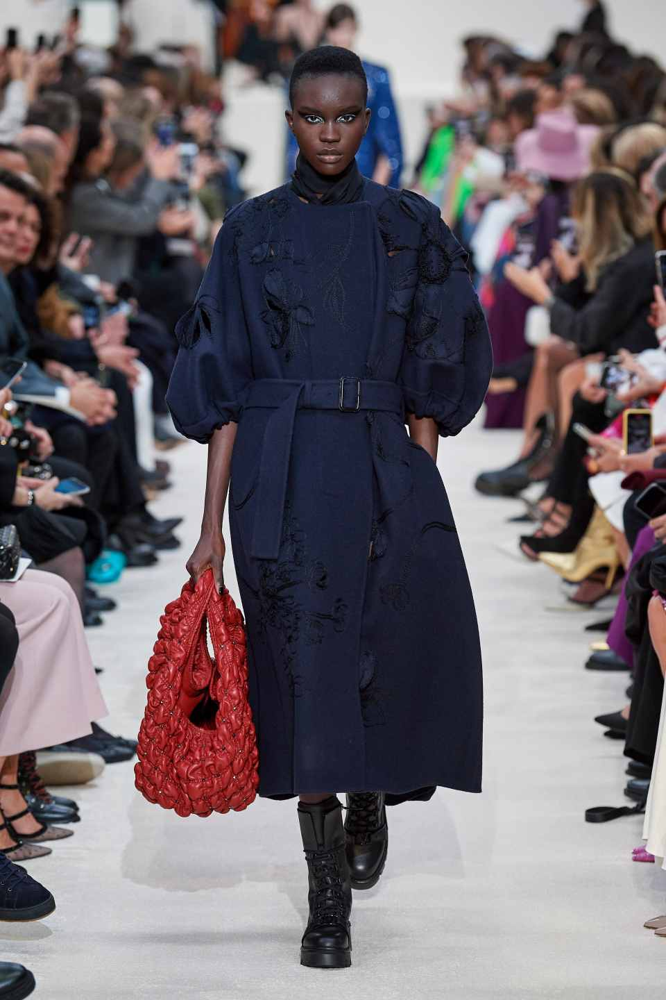
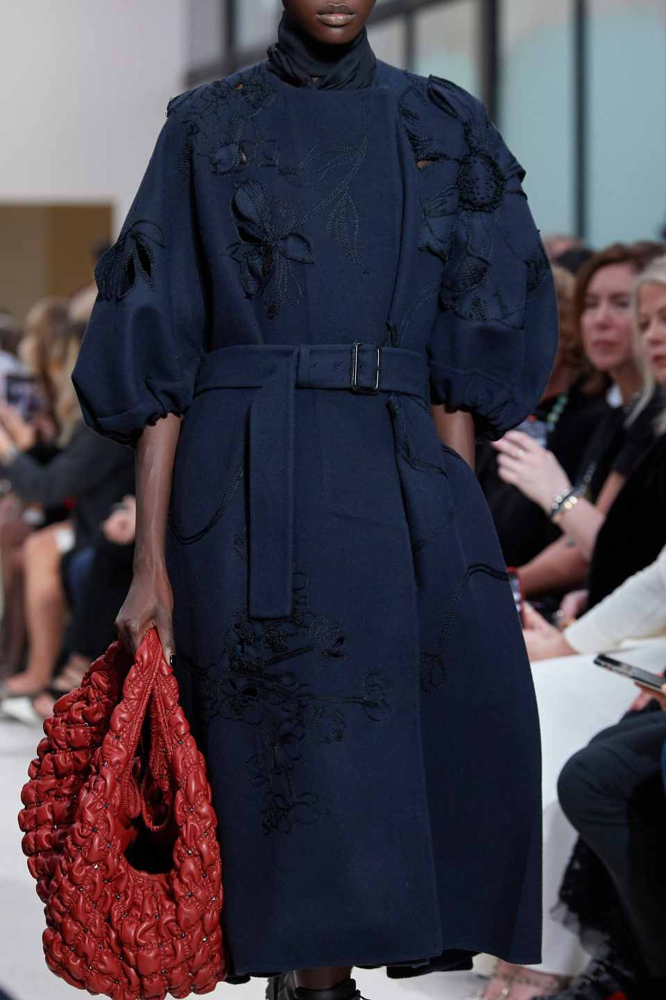
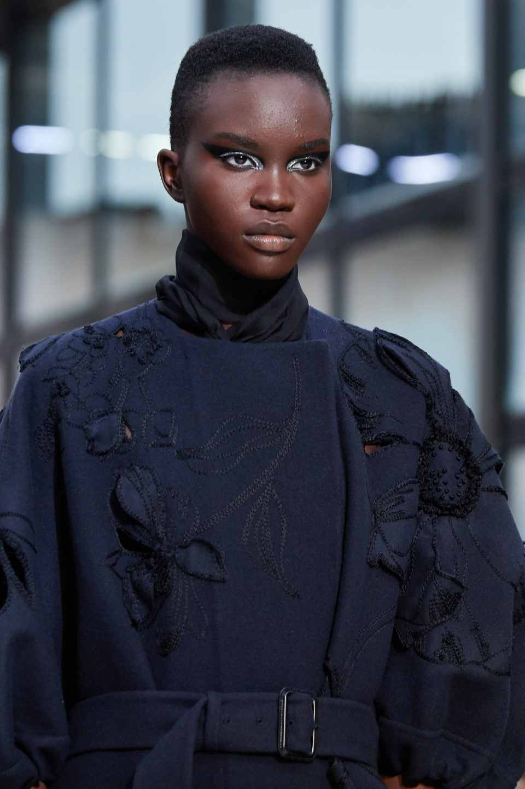
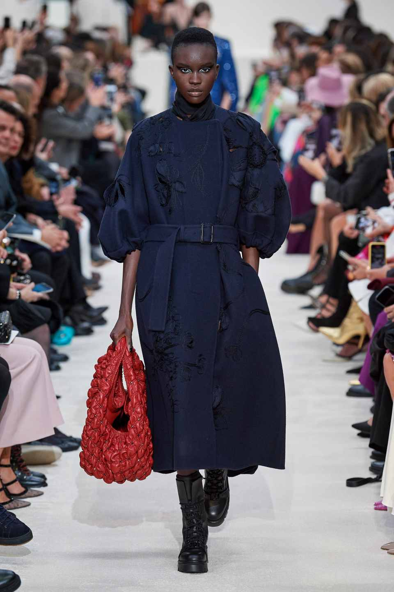
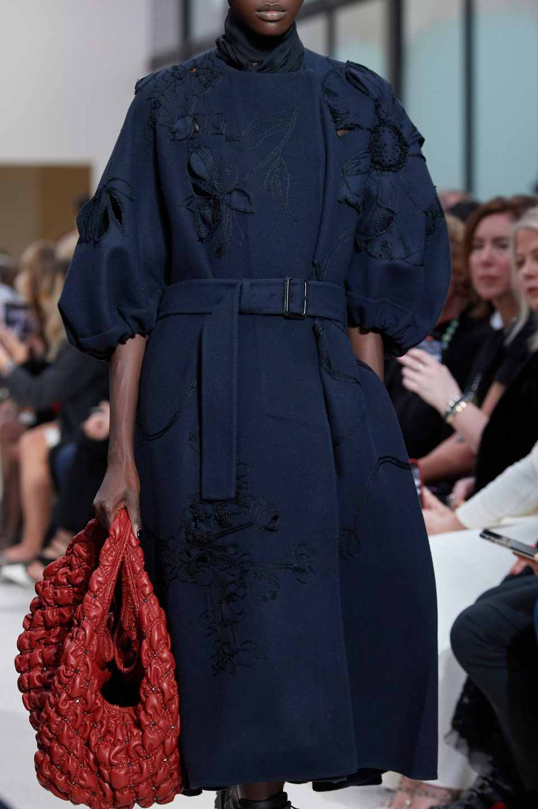
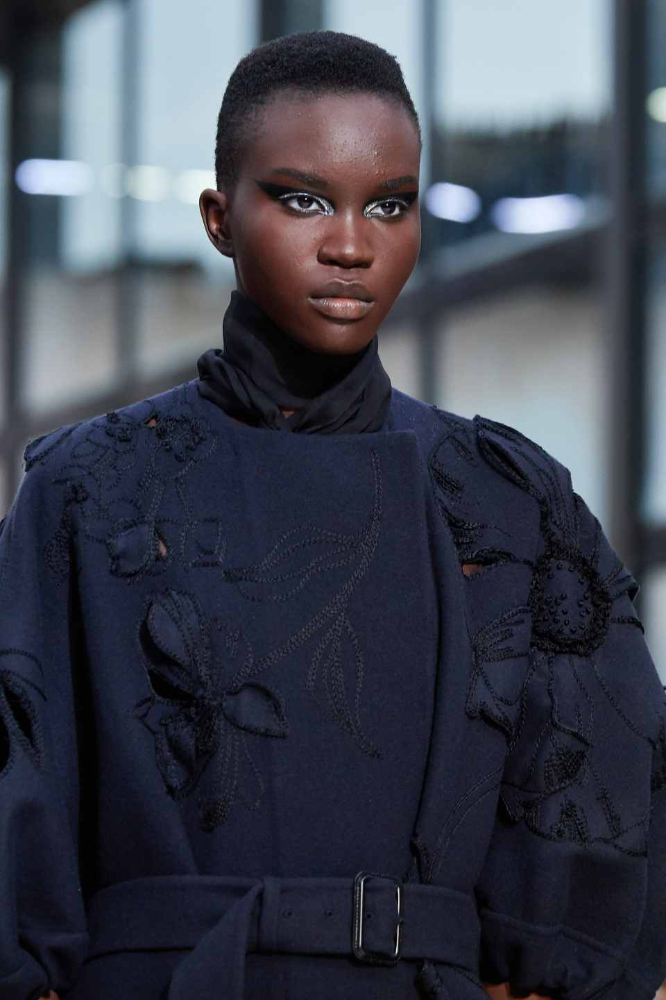

Fall 2020 Ready to Wear
Description
Fall 2020 Ready to wear collection was inspired by season's neo-minimalist look.The wcollection is abouty stripping colors away and quite a bit of embelishment that havebecome accustomed to Valentino. Its anout embracing the big changes in the world of encouraging tolerance and equility. The whole depict individaulity, inclusivity,etc. which include brass button peacoat, mid length cashmere belted coat, herringbones, flat sequins high neck, gown with a train, short skirt, degital flower printed hilighted with long and short stitches. Flowers are degitally printed on a cotton muslin fabric and patched on a felt overcoat. All the patched prints are highlighted with running stitches in a cotton thread matching to the floral color. Tweed fabrics are hilighted withbugles, flat sequins, swarovski clip stones, etc.
 




